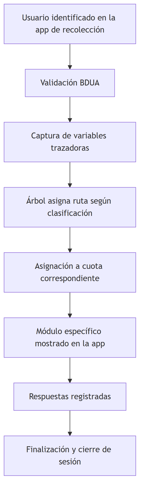

Capítulo 2 Identidad de la operación estadística
Los insumos disponibles identifican dos componentes que operan de forma
integrada: la aplicación de recolección (01_App/ClicSalud.html, que en el
código se autodenomina “Encuesta Nacional de Salud” v1.1.0) y el árbol de
decisión (02_arbol/, con nodos, módulos y rutas en data/*.js).

Integración esperada entre ClicSalud y el árbol de decisión
Pendiente de definición: nombre oficial de la operación a usar de forma consistente en el documento (ver decisión pendiente #9 en ??).